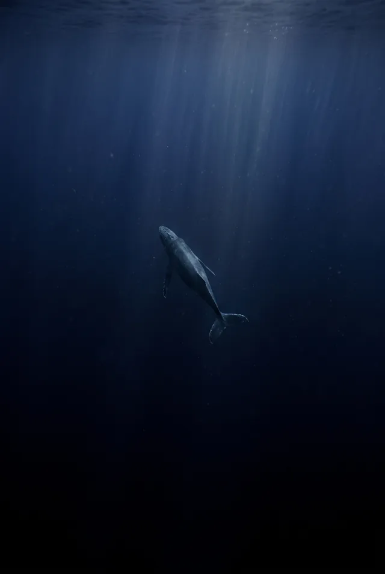

Pelagic Pictures presents · a film by Mara Voss
MIDWATER
A film about the ocean between the light and the floor.
Begin descent
Station 01 · 0–6 m
The Last People
Where the ocean still belongs to us — for the length of one held breath.
Station 02 · 22 m
The Line
Two breaths, one rope, no bottom.
Station 03 · 44 m
The Cloud
A single animal wearing ten thousand bodies.
Station 04 · 92 m
Leviathan
The mother sings so low the sea itself carries her.
Station 05 · 640 m
Lantern Town
Where the sun has never been, everyone brings their own light.
Station 06 · Ascent
The Return
The surface, remembered.
MIDWATER was filmed over four years, in seven seas,
between zero and six hundred and forty metres.
- Directed by
- Mara Voss
- Produced by
- Ainsley Chua · Pelagic Pictures
- Cinematography
- Nadezhda Moryak · Jess Loiterton · Dio Patcho · Jun Ho Lee · Adrien Jacta · Chew HanYang
- Edited by
- Tobi Okafor
- Original score
- Jonas Reppe
- Sound design
- Dragon Studio
